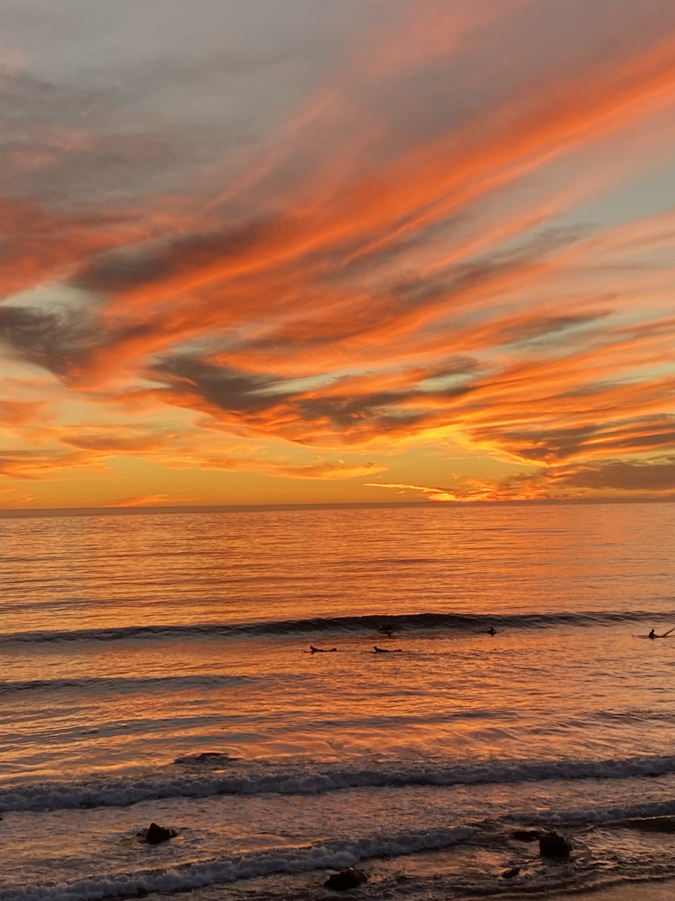
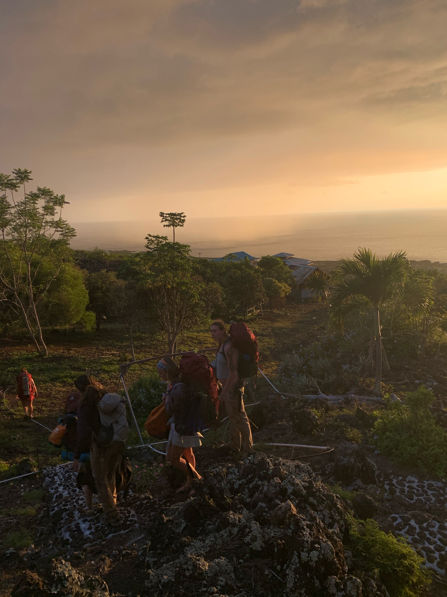
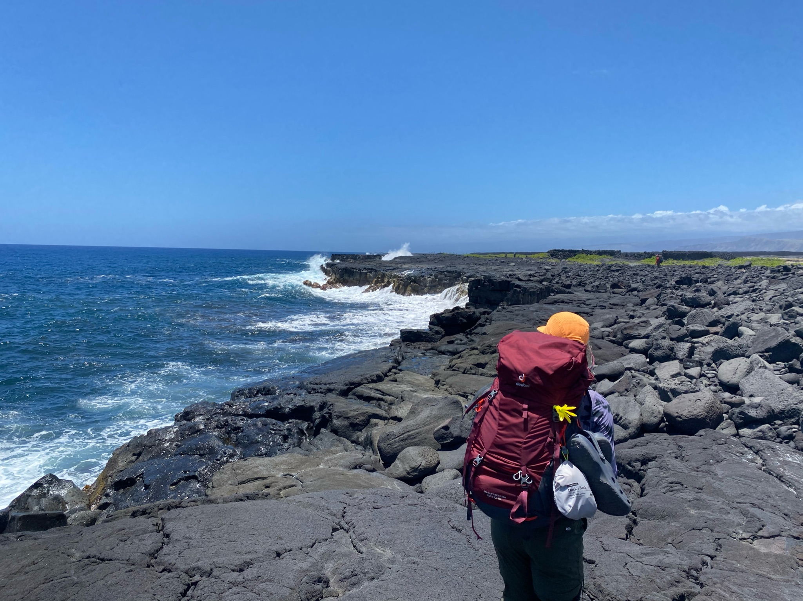
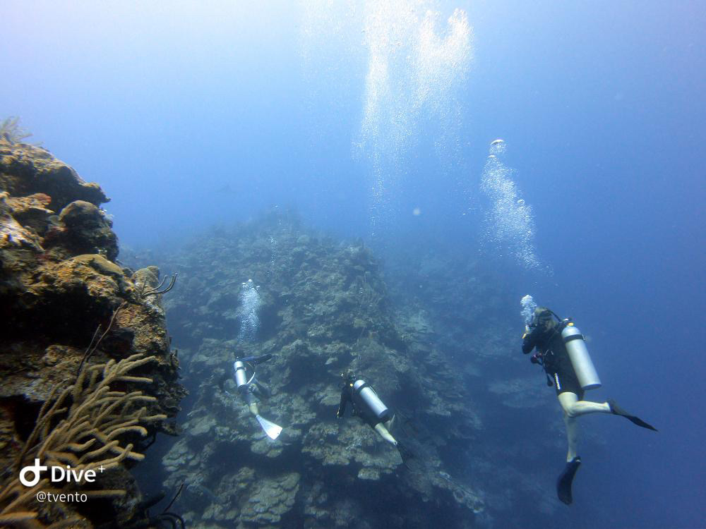

    
Education
-
Master of Environmental Data Science (June 2024)
- Bren School of Environmental Science & Management – University of California, Santa Barbara (UCSB)
-
Bachelor of Science in Environmental Studies (June 2023)
-
University of California, Santa Barbara (UCSB)
- Concentrations: Environmental Policy, Sustainability, Climate Change, and Conservation
-
University of California, Santa Barbara (UCSB)
Experience
-
International Academic Field Studies Program
-
Wildlands Studies Hawaii, Big Island, Hawaii
- Focus on marine and terrestrial field research as well as indigenous marine management and food systems
-
Researcher, Eliason Lab
-
University of California, Santa Barbara Eliason Lab – UCSB, Santa Barbara, CA
- Investigated thermal tolerance of fishes under fluctuating temperatures and varying diet quality using cardiovascular performance as a metric
-
Senior Research Assistant
-
Centre for Biodiversity and Conservation Science, University of Queensland – Brisbane, Australia (1/13–Present)
- Designing a global endangered species database using policy evaluation, R, SQL, and web scraping for both academic and non-academic applications
- Implementing advanced statistical modeling, data cleaning, machine learning, version control, and data visualization to analyze fisheries bycatch patterns in large-scale global datasets for the Ocean Conservation Team
- Collaborating with industry partners to interpret results and identify strategies for promoting environmentally efficient fishing practices unique to each fishery
- Co-authoring research publications and resolving computer science challenges alongside a multidisciplinary team
- Presenting on current research and future development plans at the International Congress for Conservation Biology
- Secured a small grant to host a workshop, bringing together intergovernmental, governmental, and nonprofit stakeholders
-
Centre for Biodiversity and Conservation Science, University of Queensland – Brisbane, Australia (1/13–Present)
-
University of California, Santa Barbara Eliason Lab – UCSB, Santa Barbara, CA
-
Wildlands Studies Hawaii, Big Island, Hawaii
Guest Service Experience
- Fine Dining Waitress, The Kitchen American Bistro, Boulder, CO (7/24–Present)
- Fine Dining Waitress, The Ritz-Carlton Bacara, Santa Barbara, CA (6/21–1/22)
- Boutique Sales Associate, Stella E Luna Boutique, Point Pleasant, NJ (5/19–10/19)
- Food Service, Shore Fresh Seafood Restaurant & Market, Point Pleasant, NJ (6/18–10/18)
Technical Skills
- Spatial Mapping in ArcGIS
- Statistical Analysis and Data Visualization in R Studio
- UX Design
- Python
- Machine Learning
- Google Workspace
- Scientific Writing
- R, Python, SQL, Git, (Basic) Command Line
- Microsoft Office (Word, Excel, PowerPoint)
- Java, HTML, and CSS
Research Qualifications
- IACUC Training (Fish)
- CITI Wildlife Research
- CITI Working with Fish in Research Settings
Certification
- PADI Open Water Diver
Writing, Research, and Presentation
- Report writing, literature review, policy memos, and public presentations